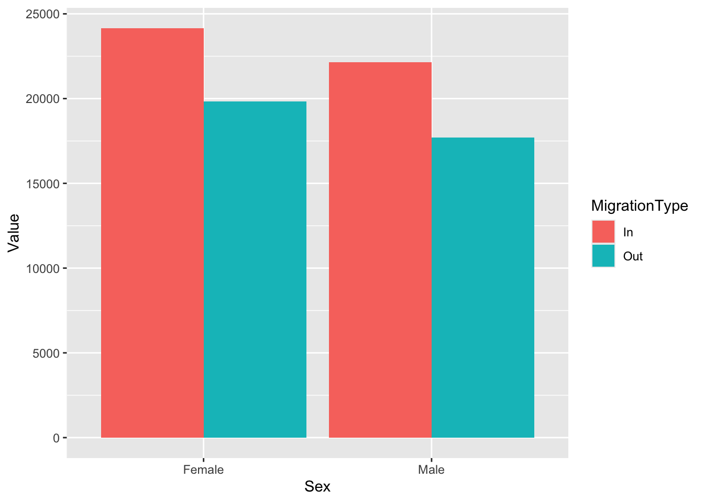
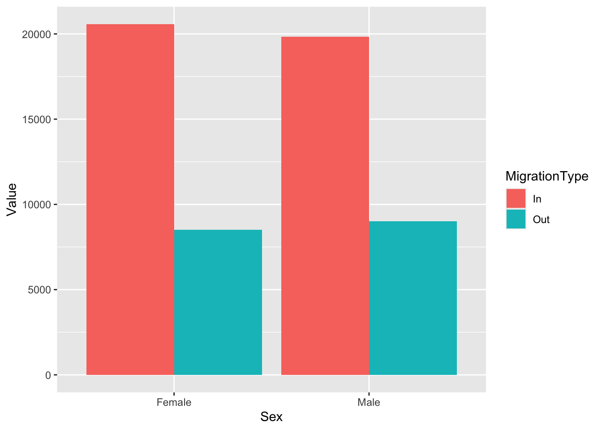
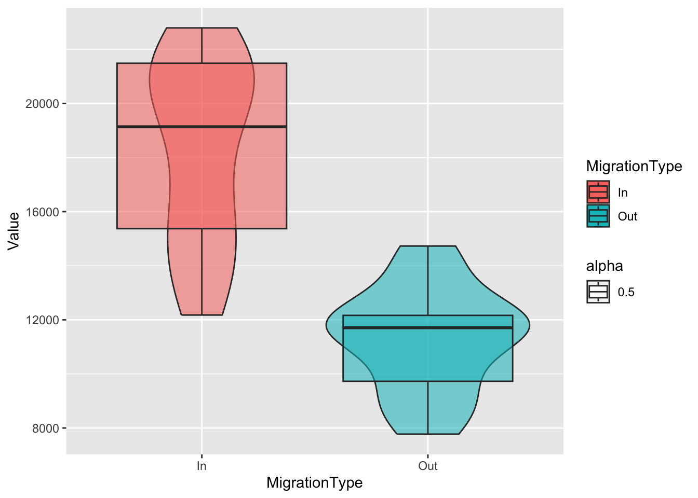
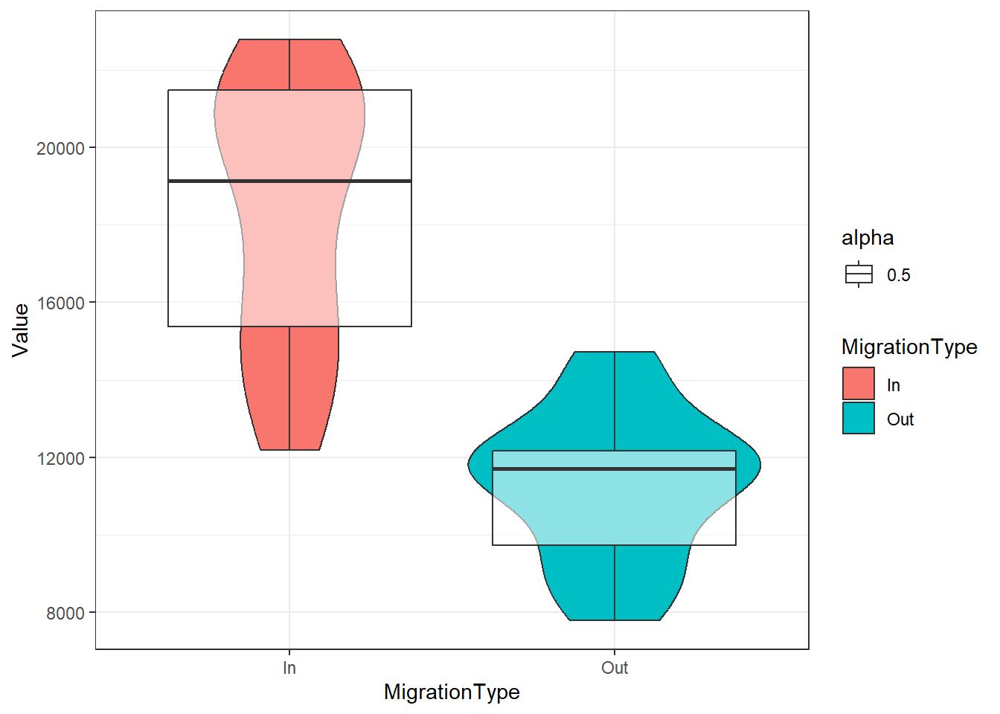
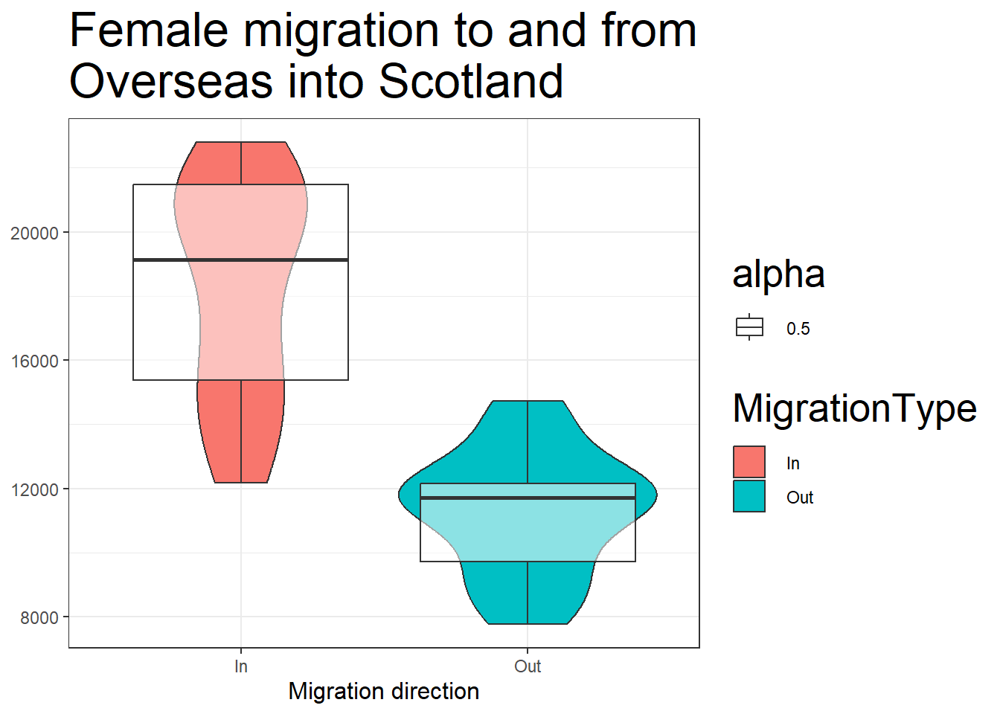
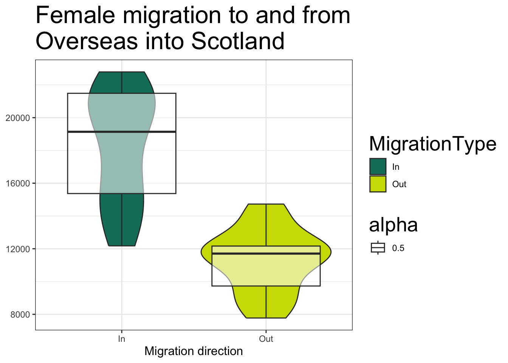
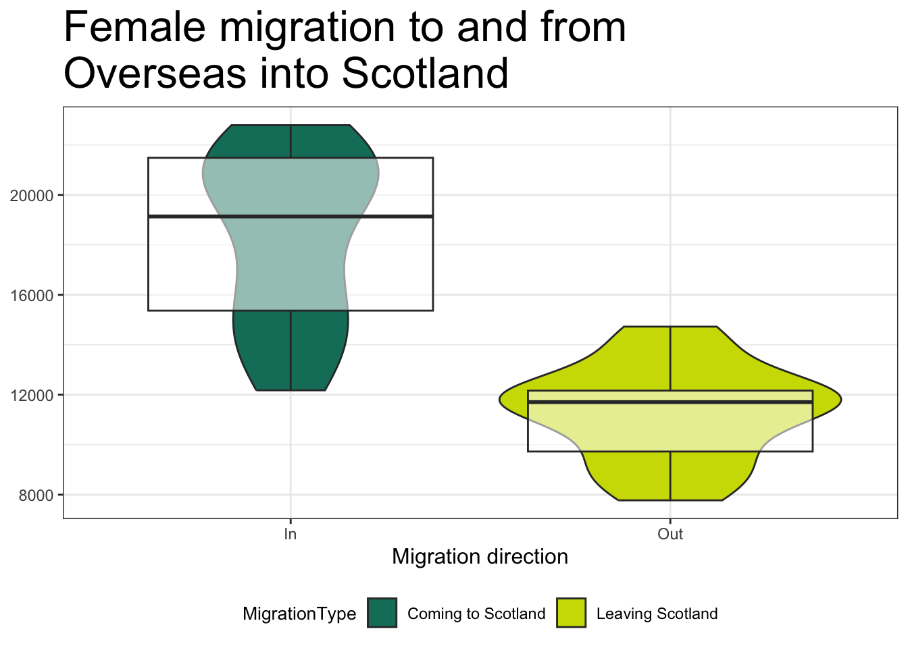
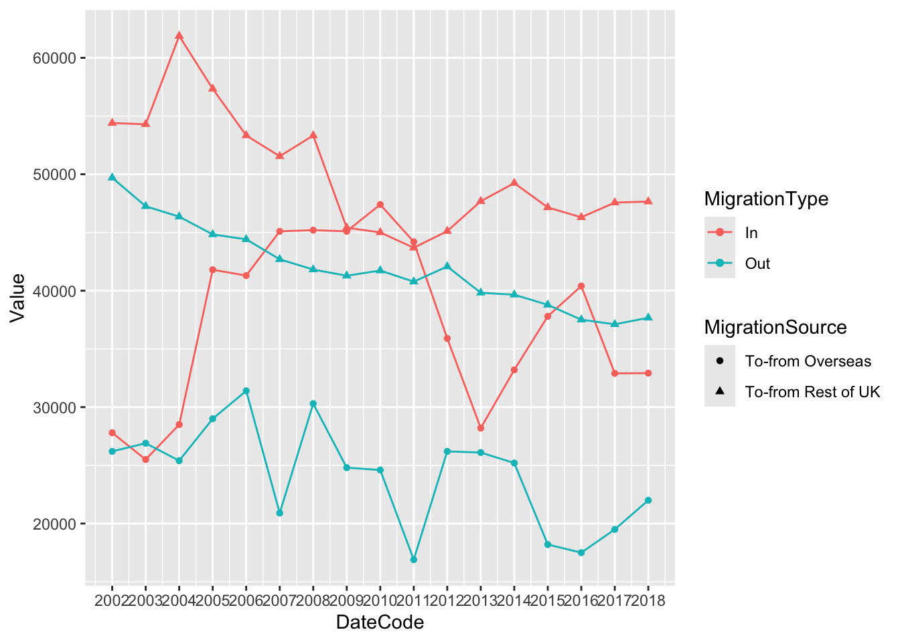

Chapter 8 Data Visualisation 2: Combining and Customising
Today, we will continue working with ggplot2 which is part of tidyverse. We will continue working with the data from the Scottish Government saved in the file free_movement_uk.csv.
8.1 Additional Resources
- Cookbook for R - Graphs
- Hadley Wickham et al.’s Elegant graphics for Data Analysis
- ggplot2 cheatsheet
- ggplot2 functions reference
Intended Learning Outcomes
- Learn how to make multiple plots at the same time
- Learn the difference between global and local aesthetics
- Learn how to work with themes: adding labels, changing font size, colours and axes ticks.
- Learn to work with legends.
This lesson is led by Sean Westwood.
8.2 Pre-steps
Firstly, load tidyverse, and read the data into your Global Environment as migration_scot.
8.3 Re-introduction to the data
This data is openly available from the Scottish Government, and it introduces the flow of people at different ages and sex into and out of Scotland from the rest of UK (RUK) and Overseas. We have several variables to work with:
| Variable | Description |
|---|---|
| FeatureCode | Codes given by the Scottish Government |
| DateCode | Year of data collected |
| Measurement | What type of measurement it is (here we have only counts i.e. the number of people) |
| Units | Units (here we have number of people) |
| Value | The actual count (i.e. the number of people) |
| Age | Age of the counted people (separate by age, and total (sum of all age groups)) |
| Sex | Sex of the counted people (separate by sex, and total (sum all sex groups)) |
| Migration Source | Where the people are coming from (Overseas, RUK) |
| Migration Type | Whether people are coming or leaving (In, Out, and Net (people coming in less the people leaving)) |
This is the wrangled data from last week.
8.4 Create multiple plots in one
Sometimes, we have way too many variables and they are all important. You should always avoid having busy plots. They get too confusing, and it is easy for people to misinterpret them.
We are going to look at two ways to create multiple plots.
8.4.1 Select the data beforehand and create different plots.
Simple Task 1:
From the data we just created, select only data relevant for movement
to and from the rest of the UK and save it to the
Global Environment as an object called
rest_of_uk .
Simple Task 2:
Create a column plot that shows the number of people for each sex
using the data we just created using geom_col(). Separate
the data by using different colours based on MigrationType. Don’t forget
to use position = ‘dodge’ so that your columns do not
overlap.

Simple Task 3:
Now plot only the data for the movement to and from Overseas
following the previous two steps. This time, make sure you save your
wrangled data into an object called overseas and then use
it to create your plot.
overseas <- traffic_scot %>%
filter(MigrationSource == 'To-from Overseas')
ggplot(overseas, aes(x = Sex, y = Value,
fill = MigrationType)) +
geom_col(position = 'dodge')
This becomes very cumbersome when we have more than one variable. Imagine you have data for 10 different countries. Can you imagine doing these plots by hand. Moreover, when you have to arrange them on a page to show how things differ you will loose a lot of time. Instead we can use facets.
8.4.2 Facets
Facets allow us to create separate plots without manually separating the data. Moreover we can specify how we want to put the plots in a grid: do we want them side by side or one on top of each other, etc.
We can use several facet functions.
facet_grid(variable_to_split_by)structures the rows and columns of graphs based on a third variablefacet_grid(.~variable)creates columns - i.e. side by side panelsfacet_grid(variable~.)creates rows - i.e. one on top of the otherfacet_grid(variable1~variable2)creates rows based on variable1 and columns based on variable2
facet_wrap(variable)creates a grid with rectangular slots for the plots based on your variables
Let’s replicate the two plots we just created but using facet_grid() and put them side-by-side in one. Now we have both plots next to each other, which makes it much easier to look at the differences in the migration patterns between the two Migration Sources.
ggplot(traffic_scot, aes(x = Sex, y = Value,
fill = MigrationType)) +
geom_col(position = 'dodge') +
facet_grid(.~MigrationSource)
Question Time
Let’s look at these plots.
- Which sex tends to move to Scotland more, regardless of migration location?
- Which migration location do both males and females migrate to more when they leave Scotland?
8.5 Global and Local aesthetics
So far, we have been working with a Global definition of the aesthetics. This allows us to specify the axes and the groupings only once.
Sometimes, we want to use multiple data and put multiple plots on top of each other. For these occasions we can specify the aesthetics at a local level - i.e. in the geoms.
If you remember from last week, we specified both the colour and the shape in our ggplot() when we were making the line graph. The geom_line() inherited the colour but not the shape argument.
However, if we have two geoms that share the same aesthetics but we do not want to have the same colours, we can move them to each of the geoms instead of specifying them globally in the ggplot() function.
Let’s redo the violins and box plots from last week, and put them together into two separate layers of the same graph. This time, we will give them some colour. We will colour the violins with the fill argument and make the box plots transparent using the alpha argument.
#some data wrangling
boxes <- migration_scot %>%
filter(Sex == 'Female',
MigrationSource == 'To-from Overseas',
Age == 'All',
MigrationType != 'Net')
#make violins and box plots
ggplot(boxes, aes(x = MigrationType, y = Value)) +
geom_violin(aes(fill = MigrationType)) +
geom_boxplot(aes(alpha = 0.5))
Because alpha (the transparency argument) and fill are arguments for both box plots and violins, if we had put them in the ggplot() layer, they would both be inherited by the two geoms.
Let’s see how it would have looked like if we had specified the two arguments globally.
#make violins and box plots
ggplot(boxes, aes(x = MigrationType, y = Value, fill = MigrationType, alpha = 0.5)) +
geom_violin() +
geom_boxplot()
Now the violins and the box plots are both coloured and transparent.
As you know, R works left to right and top to bottom, reading your
code line by line. The box plots are on top of the violins because
geom_boxplot() is after geom_violin(). Try it
in your console, or make an r chunk in your stub file to see how it
would look like.
8.6 Themes: Making your plots pretty: looking the way you want them to
The great thing about making your own plots in R is that you can make them look the way you want. Even better, if you are writing a paper, graphs are easy to adjust to match journals’ criteria. Let’s adjust the look of our graph.
8.6.1 Ready-made themes
ggplot2 comes with several ready made themes. Some of them are:
theme_bw(): a white background with major axes and border.theme_minimal(): a white background with major axes and more. Just use the cheetsheet for visualisations with ggplot for some more examples.
Themes are just like any other layer for ggplot. You just add them at the end of your plot with +. Let’s add one of these theme formats to our plot above.
ggplot(boxes, aes(x = MigrationType, y = Value)) +
geom_violin(aes(fill = MigrationType)) +
geom_boxplot(aes(alpha = 0.5)) +
theme_bw()
Can you see the difference from our original plot?
The background is no longer grey, the grid lines are a light grey instead of white, and there is a black border around the plot area.
8.6.2 Adding axes titles and headings
Next, let’s add some titles and better labels with labs(). You need to specify which labels you want to change - x, y or the title, and type in the labels you want. Write ?labs() in your console to see some examples.
ggplot(boxes, aes(x = MigrationType, y = Value)) +
geom_violin(aes(fill = MigrationType)) +
geom_boxplot(aes(alpha = 0.5)) +
theme_bw()+
labs(title = 'Female migration to and from Overseas into Scotland',
x = 'Migration direction',
y = 'Number of people')
Sometimes, we need the titles to be a specific size. We can change all of that in an additional theme() layer. We specify the argument we want to change and what about them we need to change. In our case, I want to change the size of the x-axis title to 12pt, and the graph title to 20pt. Let’s also pretend we do not want the y-axis title. We can also specify this in the theme() layer.
We do this by specifying element_text() and element_blank() for the correct theme arguments (axis.title.x, title, axis.title.x). Simply put, for that element of the plot, what do we want to change - text and to make it blank.
ggplot(boxes, aes(x = MigrationType, y = Value)) +
geom_violin(aes(fill = MigrationType)) +
geom_boxplot(aes(alpha = 0.5)) +
theme_bw()+
labs(title = 'Female migration to and from\nOverseas into Scotland',
#the addition of \n gives a new line
x = 'Migration direction',
y = 'Number of people') +
theme(
axis.title.x = element_text(size = 12),
# read this as: change the size of element_text of the
# x axis title
title = element_text(size = 20),
axis.title.y = element_blank()
# read this as: change the title of the y axis to blank
)
The ready made themes like theme_bw() come with an
already pre-set size of the titles and and headings. However, since we
are putting the theme() as a new layer below
theme_bw() we will override only the specific component
that we want. Try putting theme_bw() at the bottom instead
of above the theme() layer.
8.7 Changing colours
We can rely on the colour schemes automatically set by ggplot2, or we can manually specify colours we want. To change any of the colours, we need to specify which scale we are changing. This is done by specifying the aesthetic. In our case, we are changing the colours of the fill aesthetic so we use scale_fill_manual(). Instead of using names, you can use any hex colour you want. A hex colour is the representation of a colour using a 6 digit code. scale_fill_manual() works like another layer, which overwrites the automatic colour schemes. Because it overwrites an existing function, it has to be after the geom that uses the fill argument.
ggplot(boxes, aes(x = MigrationType, y = Value)) +
geom_violin(aes(fill = MigrationType)) +
geom_boxplot(aes(alpha = 0.5)) +
scale_fill_manual(values = c('#127d69', '#cedc00')) +
#here I have picked two specific colours
theme_bw() +
labs(title = 'Female migration to and from\nOverseas into Scotland',
x = 'Migration direction',
y = 'Number of people') +
theme(
axis.title.x = element_text(size = 12),
title = element_text(size = 20),
axis.title.y = element_blank()
)
R really likes order, so it will put everything in alphabetical
order. This is why the first colour in the
scale_fill_manual() layer - #127d69, is
associated with migration category In and the second
colour - #cedc00 is associated with migration category
Out.
8.8 Legends
We can see that for any additional aesthetic we have put, ggplot has created a legend on the side.
Now let’s change what the labels actually say. We do this in the same place we specified the colours scale_fill_manual because, again, we are overwriting the automatic fill labels.
Let’s also:
hide the legend associated with the box plots (i.e.
alpha);move the legend to the bottom of the graph using the
legend.positionargument; andchange the size of the legend titles (using
legend.title).
We do steps 2 and 3 in the theme() layer.
Because we have more than one legend, everything we do will be applied to both legends.This is a good idea for consistency. But when we want to hide one of the legends, we have to specify that in the geom where the legend is created using the argument show.legend.
ggplot(boxes, aes(x = MigrationType, y = Value)) +
geom_violin(aes(fill = MigrationType)) +
geom_boxplot(aes(alpha = 0.5), show.legend = FALSE) + # hide the legend
scale_fill_manual(values = c('#127d69', '#cedc00'),
labels = c('Coming to Scotland',
'Leaving Scotland')) +
theme_bw() +
labs(title = 'Female migration to and from\nOverseas into Scotland',
x = 'Migration direction',
y = 'Number of people') +
theme(
axis.title.x = element_text(size = 12),
title = element_text(size = 20),
axis.title.y = element_blank(),
legend.position = 'bottom', #move the legend to the bottom
legend.title = element_text(size = 10)
)
8.9 Changing axes ticks
Now, we also need to change what is stated on our x-axis to match the legend. We use scale_x_discrete() to give new names inside the graph, so that we do not have to change our dataset. We specify the labels of the new groups by giving the old name in quotes and then the new name, also in quotes. We use scale_x_discrete(), because we have discrete groups - a categorical variable.
ggplot(boxes, aes(x = MigrationType, y = Value)) +
geom_violin(aes(fill = MigrationType)) +
geom_boxplot(aes(alpha = 0.5), show.legend = FALSE) +
scale_fill_manual(values = c('#127d69', '#cedc00'),
labels = c('Coming to Scotland',
'Leaving Scotland')) +
scale_x_discrete(labels = c('In' = 'Coming to Scotland',
'Out' = 'Leaving Scotland')) +
theme_bw() +
labs(title = 'Female migration to and from\nOverseas into Scotland',
x = 'Migration direction',
y = 'Number of people') +
theme(
axis.title.x = element_text(size = 12),
title = element_text(size = 20),
axis.title.y = element_blank(),
legend.position = 'bottom',
legend.title = element_text(size = 10)
)Let’s also say that we are plotting data which is continuous but we want to show each of the values. For example we have years and we want to show every year. ggplot will try and skip some of the years to make the graph look neater. There are several ways we can change that. We can either make the variable into a factor or a character using as.characterso that ggplot will be forced to look at it as a discrete variable or we can change the ticks of the x axis by giving them limits and breaks in the layer that overwrites the original x values - scale_x_continuous().
Let’s use the graph from last week which showed us the change in migration across the years.
# First, we are getting the data from last week to recreate the code.
traffic_scot2 <- migration_scot %>%
filter(Age == 'All',
MigrationType != 'Net',
Sex == 'All') %>%
select(DateCode, Value,MigrationSource, MigrationType)
ggplot(traffic_scot2, aes(DateCode, Value,
shape = MigrationSource,
colour = MigrationType)) +
geom_point() +
geom_line() +
scale_x_continuous(limits = c(2002,2018), breaks = c(2002:2018))
8.10 Saving plots
Finally, we have made these lovely plots but we want to be able to put them in reports, papers, on a poster (print it in a large canvas for friends and family to admire). To save your plot to your working directory, you can use the function ggsave. First, you have to save your plot into an object in the Global Environment.